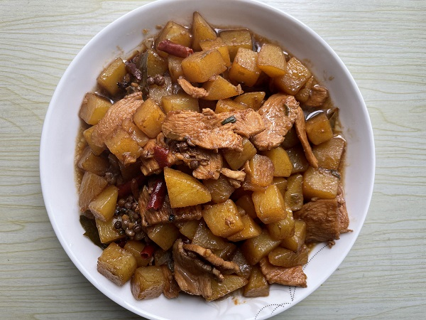
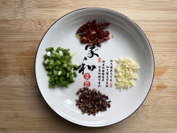
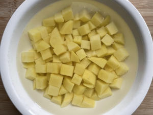
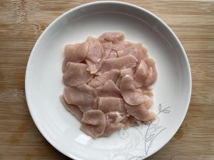
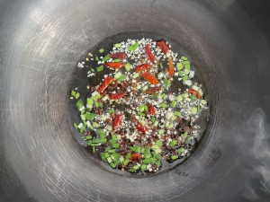
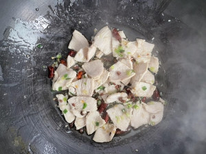
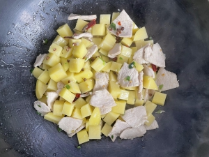
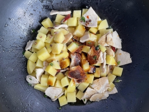
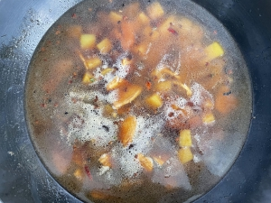

食材用料
| 食材 | 数量 |
|---|---|
| 土豆 | 200克（1人食量） |
| 鸡胸肉 | 半块（1人食量） |
| 油 | 适量 |
| 葱 | 适量 |
| 姜 | 适量 |
| 蒜 | 适量 |
| 辣椒圈 | 适量 |
| 花椒 | 适量 |
| 桂叶 | 1片 |
| 盐 | 适量 |
| 老抽 | 少量 |
| 生抽 | 适量 |
做法步骤
| 图片 | 步骤 |
|---|---|
| 1. 准备食材 | |
|  | 2. 葱切葱花，蒜切末，姜切丝，和辣椒圈花椒装起来 |
|  | 3. 鸡胸肉切成片 |
|  | 4. 土豆切成块，加清水泡防止变色 |
|  | 5. 起锅，热油下肉片炒至变色 |
|  | 6. 避油捞起 |
|  | 7. 接着锅中的油下葱花、蒜末、姜末、辣椒圈、花椒爆香 |
|  | 8. 加入土豆块翻炒至颜色变得半透明 |
|  | 9. 加入肉片，老抽翻炒至颜色均匀 |
| 10. 加半碗水，加入生抽，放盐、桂叶，大火煮10分钟 | |
| 11. 收锅（可选多汤汁或者无汤汁，无汤汁更好吃） | |
 | 12. 装盘 |